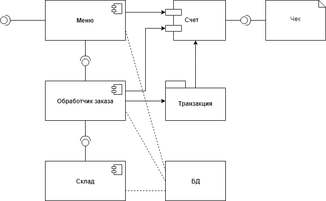

Тест на корректность ввода данных, тест на выполнимость приведения данных, тест структуры данных.
Дублирование функций допустимо в том случае, если необходимо создать похожие структуры данных.
«Плохой код» допустим, когда задача требует неординарных решений.
Будет отображено в репозитории GitHub, технический долг будет учитываться разработчиками следующего курса при продолжении проекта.
Основные практические приемы применения теории массового обслуживания в гибкой разработке программных средств (Scrum).
Диаграммы компонентов UML, основные изобразительные элементы и назначение.
Заведеева Т.В., Марков А.А. – теоретическая часть, Почепко М.О. – примеры.